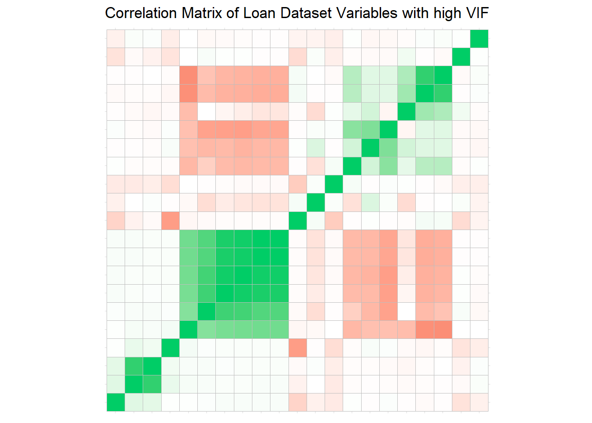
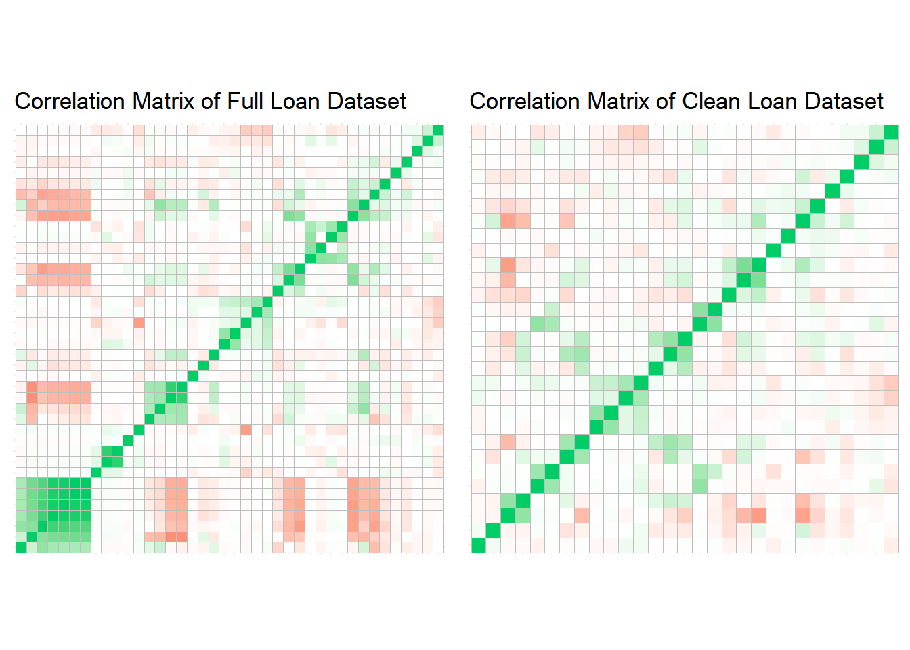
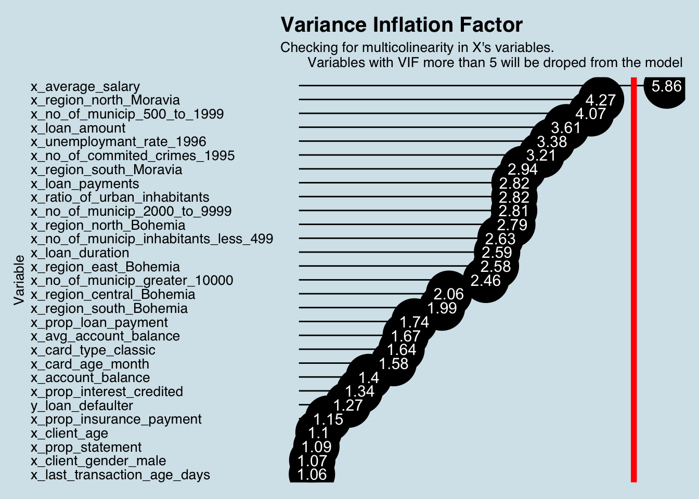
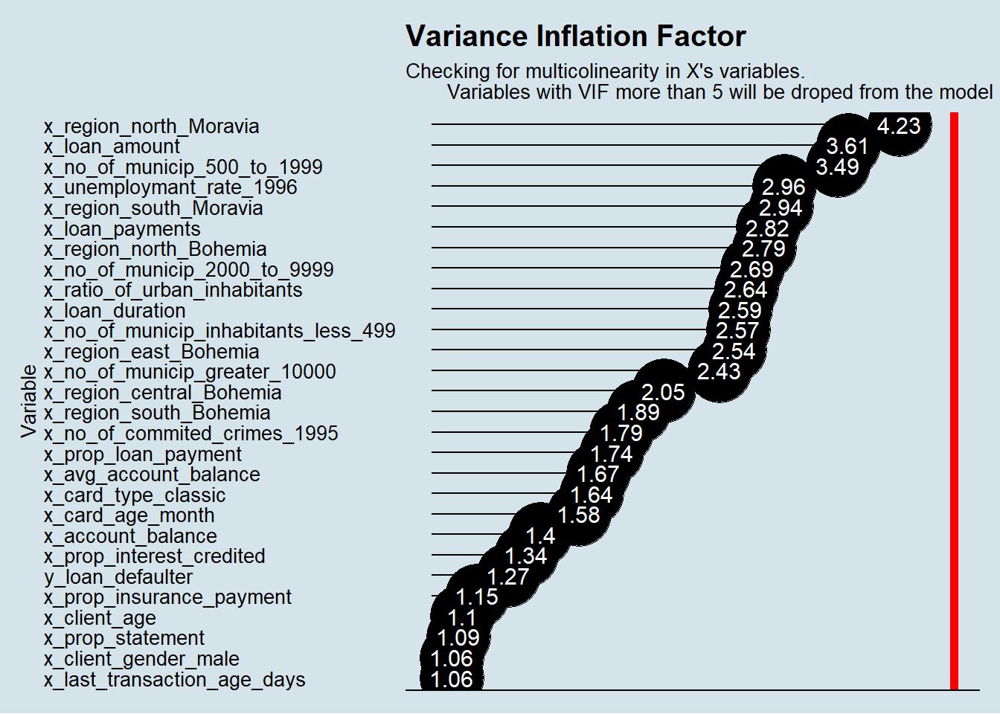
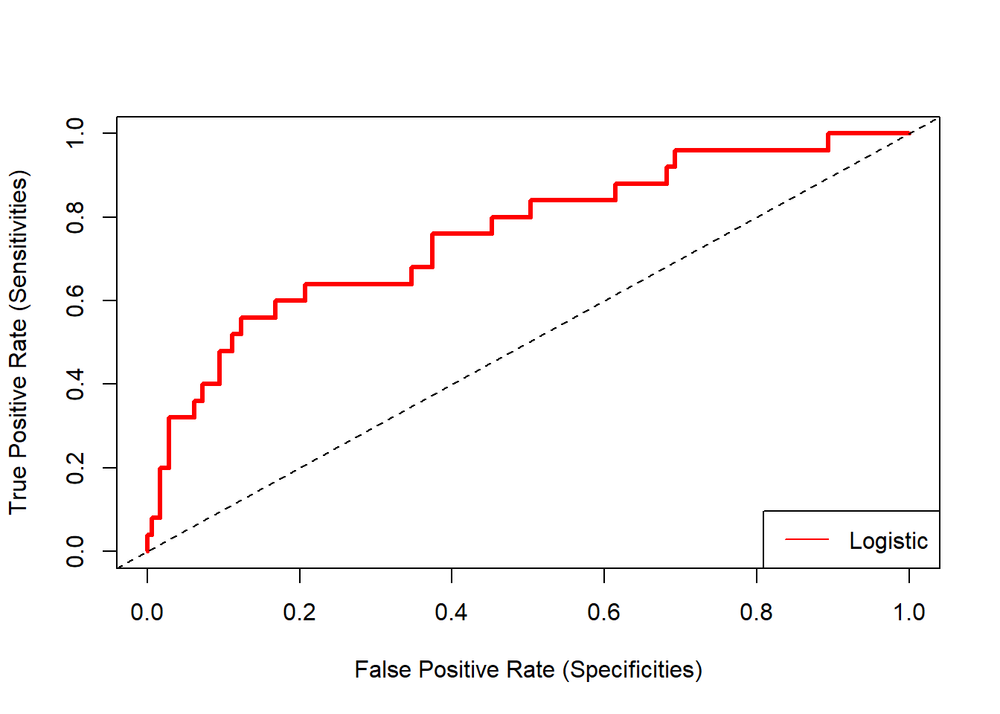

The goal of this report is trying to fit a logistic regression model on Loan data aiming to predict the probability of delinquency for each contract.
Using the vanilla transaction dataset, we calculated several derived variables for each account as described in the Data Preparation session.
This dataset is joined with Loan, Client, Credit Card, District, Account and Account Balance tables.
We ended up having a data set with 118 variables.
| variables |
|---|
| y_loan_defaulter |
| x_account_balance |
| x_average_salary |
| x_avg_account_balance |
| x_card_age_month |
| x_card_type_classic |
| x_card_type_gold |
| x_card_type_junior |
| x_client_age |
| x_client_gender_male |
| x_district_name_Benesov |
| x_district_name_Beroun |
| x_district_name_Blansko |
| x_district_name_Breclav |
| x_district_name_Brno_mesto |
| x_district_name_Brno_venkov |
| x_district_name_Bruntal |
| x_district_name_Ceska_Lipa |
| x_district_name_Ceske_Budejovice |
| x_district_name_Cesky_Krumlov |
| x_district_name_Cheb |
| x_district_name_Chomutov |
| x_district_name_Chrudim |
| x_district_name_Decin |
| x_district_name_Domazlice |
| x_district_name_Frydek_Mistek |
| x_district_name_Havlickuv_Brod |
| x_district_name_Hl.m._Praha |
| x_district_name_Hodonin |
| x_district_name_Hradec_Kralove |
| x_district_name_Jablonec_n._Nisou |
| x_district_name_Jesenik |
| x_district_name_Jicin |
| x_district_name_Jihlava |
| x_district_name_Jindrichuv_Hradec |
| x_district_name_Karlovy_Vary |
| x_district_name_Karvina |
| x_district_name_Kladno |
| x_district_name_Klatovy |
| x_district_name_Kolin |
| x_district_name_Kromeriz |
| x_district_name_Kutna_Hora |
| x_district_name_Liberec |
| x_district_name_Litomerice |
| x_district_name_Louny |
| x_district_name_Melnik |
| x_district_name_Mlada_Boleslav |
| x_district_name_Most |
| x_district_name_Nachod |
| x_district_name_Novy_Jicin |
| x_district_name_Nymburk |
| x_district_name_Olomouc |
| x_district_name_Opava |
| x_district_name_Ostrava_mesto |
| x_district_name_Pardubice |
| x_district_name_Pelhrimov |
| x_district_name_Pisek |
| x_district_name_Plzen_jih |
| x_district_name_Plzen_mesto |
| x_district_name_Plzen_sever |
| x_district_name_Prachatice |
| x_district_name_Praha_vychod |
| x_district_name_Praha_zapad |
| x_district_name_Prerov |
| x_district_name_Pribram |
| x_district_name_Prostejov |
| x_district_name_Rakovnik |
| x_district_name_Rokycany |
| x_district_name_Rychnov_nad_Kneznou |
| x_district_name_Semily |
| x_district_name_Strakonice |
| x_district_name_Sumperk |
| x_district_name_Svitavy |
| x_district_name_Tabor |
| x_district_name_Tachov |
| x_district_name_Teplice |
| x_district_name_Trebic |
| x_district_name_Trutnov |
| x_district_name_Uherske_Hradiste |
| x_district_name_Usti_nad_Labem |
| x_district_name_Usti_nad_Orlici |
| x_district_name_Vsetin |
| x_district_name_Vyskov |
| x_district_name_Zdar_nad_Sazavou |
| x_district_name_Zlin |
| x_district_name_Znojmo |
| x_last_transaction_age_days |
| x_loan_amount |
| x_loan_duration |
| x_loan_payments |
| x_no_of_cities |
| x_no_of_commited_crimes_1995 |
| x_no_of_commited_crimes_1996 |
| x_no_of_enterpreneurs_per_1000_inhabitants |
| x_no_of_inhabitants |
| x_no_of_municip_2000_to_9999 |
| x_no_of_municip_500_to_1999 |
| x_no_of_municip_greater_10000 |
| x_no_of_municip_inhabitants_less_499 |
| x_prop_household |
| x_prop_insurance_payment |
| x_prop_interest_credited |
| x_prop_loan_payment |
| x_prop_old_age_pension |
| x_prop_other |
| x_prop_statement |
| x_ratio_of_urban_inhabitants |
| x_region_central_Bohemia |
| x_region_east_Bohemia |
| x_region_north_Bohemia |
| x_region_north_Moravia |
| x_region_Prague |
| x_region_south_Bohemia |
| x_region_south_Moravia |
| x_transaction_amount |
| x_transaction_count |
| x_unemploymant_rate_1995 |
| x_unemploymant_rate_1996 |
Starting from this dataset we investigate the presence of redundant or variables not useful for the model such as the ones with not enough variability.
Starting with the dummy variables.
We will keep only dummies that has the event in at least 5% in the dataset:
dummy_variables <- dplyr::select(loan_dataset_logistic,
starts_with('x_client_gender'),
starts_with('x_district_name'),
starts_with('x_region'),
starts_with('x_card_type'))
dummy_variables_high <- tibble(variables = names(dummy_variables),
zeros = sapply(dummy_variables,
function(x) table(as.character(x) == 0)["TRUE"]),
ones = sapply(dummy_variables,
function(x) table(as.character(x) == 1)["TRUE"])) %>%
mutate(prop_ones = round(ones / (zeros + ones) * 100, 2)) %>%
arrange(prop_ones) %>%
filter(prop_ones > 5)
kable(dummy_variables_high)| variables | zeros | ones | prop_ones |
|---|---|---|---|
| x_region_south_Bohemia | 621 | 61 | 8.94 |
| x_region_north_Bohemia | 620 | 62 | 9.09 |
| x_district_name_Hl.m._Praha | 603 | 79 | 11.58 |
| x_region_Prague | 603 | 79 | 11.58 |
| x_region_central_Bohemia | 595 | 87 | 12.76 |
| x_region_east_Bohemia | 595 | 87 | 12.76 |
| x_region_north_Moravia | 565 | 117 | 17.16 |
| x_region_south_Moravia | 549 | 133 | 19.50 |
| x_card_type_classic | 549 | 133 | 19.50 |
| x_client_gender_male | 348 | 334 | 48.97 |
The remaining dummies will be excluded from the dataset as they do not have enough variability to fit a logistic model on them.
After we investigated the low variability in the dummies we look at the calculated variables on the transaction type proportion we calculated dutring the data enhancement process.
prop_variables <- dplyr::select(loan_dataset_logistic,
starts_with('x_prop'))
prop_variables <- summary(prop_variables)
kable(t(prop_variables))| x_prop_household | Min. :0.00000 | 1st Qu.:0.00000 | Median :0.08994 | Mean :0.10975 | 3rd Qu.:0.20138 | Max. :0.37573 |
| x_prop_insurance_payment | Min. :0.00000 | 1st Qu.:0.00000 | Median :0.00000 | Mean :0.02088 | 3rd Qu.:0.00000 | Max. :0.32182 |
| x_prop_interest_credited | Min. :0.02873 | 1st Qu.:0.08951 | Median :0.11634 | Mean :0.13651 | 3rd Qu.:0.16048 | Max. :0.63444 |
| x_prop_loan_payment | Min. :0.0002408 | 1st Qu.:0.0475180 | Median :0.0892142 | Mean :0.0986434 | 3rd Qu.:0.1392529 | Max. :0.3025147 |
| x_prop_old_age_pension | Min. :0 | 1st Qu.:0 | Median :0 | Mean :0 | 3rd Qu.:0 | Max. :0 |
| x_prop_other | Min. :0.1549 | 1st Qu.:0.5096 | Median :0.5962 | Mean :0.5923 | 3rd Qu.:0.6889 | Max. :0.8681 |
| x_prop_statement | Min. :0.0001203 | 1st Qu.:0.0229538 | Median :0.0283864 | Mean :0.0391546 | 3rd Qu.:0.0361376 | Max. :0.1883587 |
Variable x_prop_old_age_pension is also excluded from the data set as in the dataset no observation has this type of transaction.
We ended up having a data set with 40 variables.
| variables |
|---|
| y_loan_defaulter |
| x_account_balance |
| x_average_salary |
| x_avg_account_balance |
| x_card_age_month |
| x_card_type_classic |
| x_client_age |
| x_client_gender_male |
| x_district_name_Hl.m._Praha |
| x_last_transaction_age_days |
| x_loan_amount |
| x_loan_duration |
| x_loan_payments |
| x_no_of_cities |
| x_no_of_commited_crimes_1995 |
| x_no_of_commited_crimes_1996 |
| x_no_of_enterpreneurs_per_1000_inhabitants |
| x_no_of_inhabitants |
| x_no_of_municip_2000_to_9999 |
| x_no_of_municip_500_to_1999 |
| x_no_of_municip_greater_10000 |
| x_no_of_municip_inhabitants_less_499 |
| x_prop_household |
| x_prop_insurance_payment |
| x_prop_interest_credited |
| x_prop_loan_payment |
| x_prop_other |
| x_prop_statement |
| x_ratio_of_urban_inhabitants |
| x_region_central_Bohemia |
| x_region_east_Bohemia |
| x_region_north_Bohemia |
| x_region_north_Moravia |
| x_region_Prague |
| x_region_south_Bohemia |
| x_region_south_Moravia |
| x_transaction_amount |
| x_transaction_count |
| x_unemploymant_rate_1995 |
| x_unemploymant_rate_1996 |
With the remaining variables we ran a multicollinearity test to identify additional variables to drop from the model specification.
vars.quant <- select_if(loan_dataset_logistic, is.numeric)
VIF <- imcdiag(vars.quant, loan_dataset_logistic$y_loan_defaulter)
VIF_Table_Before <- tibble(variable = names(VIF$idiags[,1]),
VIF = VIF$idiags[,1]) %>%
arrange(desc(VIF))
knitr::kable(VIF_Table_Before)| variable | VIF |
|---|---|
| x_district_name_Hl.m._Praha | Inf |
| x_region_Prague | Inf |
| x_no_of_commited_crimes_1996 | 1737.252782 |
| x_no_of_inhabitants | 675.671761 |
| x_prop_other | 158.883814 |
| x_prop_household | 121.322251 |
| x_prop_interest_credited | 63.016856 |
| x_prop_loan_payment | 42.844366 |
| x_prop_insurance_payment | 33.485319 |
| x_unemploymant_rate_1996 | 17.565631 |
| x_average_salary | 14.792865 |
| x_unemploymant_rate_1995 | 13.836322 |
| x_transaction_amount | 13.273428 |
| x_prop_statement | 12.772024 |
| x_transaction_count | 12.427778 |
| x_region_north_Moravia | 8.801723 |
| x_no_of_municip_2000_to_9999 | 6.734151 |
| x_region_south_Moravia | 6.373857 |
| x_no_of_cities | 6.319146 |
| x_no_of_enterpreneurs_per_1000_inhabitants | 6.011420 |
| x_ratio_of_urban_inhabitants | 5.366908 |
| x_no_of_municip_500_to_1999 | 4.801759 |
| x_loan_amount | 3.673608 |
| x_region_central_Bohemia | 3.666128 |
| x_region_north_Bohemia | 3.568482 |
| x_no_of_municip_greater_10000 | 3.520489 |
| x_no_of_commited_crimes_1995 | 3.515248 |
| x_loan_payments | 3.494173 |
| x_no_of_municip_inhabitants_less_499 | 3.449762 |
| x_region_east_Bohemia | 3.426500 |
| x_loan_duration | 2.654518 |
| x_region_south_Bohemia | 2.349037 |
| x_avg_account_balance | 1.826483 |
| y_loan_defaulter | 1.747653 |
| x_card_type_classic | 1.712001 |
| x_card_age_month | 1.692020 |
| x_account_balance | 1.444177 |
| x_client_age | 1.108422 |
| x_last_transaction_age_days | 1.086435 |
| x_client_gender_male | 1.079951 |
Then we look at the correlogram in the high VIF variables.
low_VIF <- filter(VIF_Table_Before, VIF <= 5)$variable
high_VIF <- filter(VIF_Table_Before, VIF > 5)$variable
high_VIF_dataset <- dplyr::select(loan_dataset_logistic, high_VIF)
cor_mtx_high_VIF <- cor(high_VIF_dataset)
high_VIF_correlogram_before <- ggcorrplot(cor_mtx_high_VIF,
hc.order = TRUE,
lab = FALSE,
lab_size = 3,
method ="square",
colors = c("tomato2", "white", "springgreen3"),
title = "Correlation Matrix of Loan Dataset Variables with high VIF") +
theme(axis.text = element_blank(),
legend.position = 0)
print(high_VIF_correlogram_before)
Then we exclude the variables with high correlation keeping the variables with less correlation with the others.
correl_threshold <- 0.6
reject_variables_vector <- tibble(var_1 = row.names(cor_mtx_high_VIF)) %>%
bind_cols(as_tibble(cor_mtx_high_VIF)) %>%
melt(id = c("var_1")) %>%
filter(var_1 != variable) %>%
mutate(abs_value = abs(value)) %>%
filter(abs_value > correl_threshold) %>%
group_by(var_1) %>%
mutate(sum_1 = sum(abs_value)) %>%
ungroup() %>%
group_by(variable) %>%
mutate(sum_2 = sum(abs_value)) %>%
ungroup() %>%
mutate(reject = ifelse(sum_1 > sum_2, var_1, as.character(variable))) %>%
distinct(reject)
reject_variables_vector <- reject_variables_vector$reject
clean_dataset <- dplyr::select(loan_dataset_logistic, -reject_variables_vector)
kable(reject_variables_vector)| x |
|---|
| x_district_name_Hl.m._Praha |
| x_no_of_commited_crimes_1996 |
| x_no_of_inhabitants |
| x_no_of_enterpreneurs_per_1000_inhabitants |
| x_region_Prague |
| x_prop_other |
| x_prop_household |
| x_unemploymant_rate_1995 |
| x_transaction_amount |
| x_transaction_count |
| x_no_of_cities |
We finally look on the complete dataset correlogram with the clean data set.
cor_mtx_full <- cor(loan_dataset_logistic)
cor_mtx_clean <- cor(clean_dataset)
full = ggcorrplot(cor_mtx_full, hc.order = TRUE,
lab = FALSE,
lab_size = 3,
method="square",
colors = c("tomato2", "white", "springgreen3"),
title="Correlation Matrix of Full Loan Dataset") +
theme(axis.text = element_blank(),
legend.position = 0)
clean = ggcorrplot(cor_mtx_clean, hc.order = TRUE,
lab = FALSE,
lab_size = 3,
method="square",
colors = c("tomato2", "white", "springgreen3"),
title="Correlation Matrix of Clean Loan Dataset") +
theme(axis.text = element_blank(),
legend.position = 0)
loan_dataset_logistic <- clean_dataset
print(ggarrange(full, clean))
We also look again at the VIF estimates for the clena dataset.
vars.quant <- select_if(loan_dataset_logistic, is.numeric)
VIF <- imcdiag(vars.quant, loan_dataset_logistic$y_loan_defaulter)
VIF_Table_After <- tibble(variable = names(VIF$idiags[,1]),
VIF = VIF$idiags[,1]) %>%
arrange(desc(VIF))
ggplot(VIF_Table_After, aes(x = fct_reorder(variable, VIF),
y = log(VIF), label = round(VIF, 2))) +
geom_point(stat='identity', fill="black", size=15) +
geom_segment(aes(y = 0,
yend = log(VIF),
xend = variable),
color = "black") +
geom_text(color="white", size=4) +
geom_hline(aes(yintercept = log(5)), color = 'red', size = 2) +
scale_y_continuous(labels = NULL, breaks = NULL) +
coord_flip() +
theme_economist() +
theme(legend.position = 'none',
panel.grid.major = element_blank(),
panel.grid.minor = element_blank()) +
labs(x = 'Variable',
y = NULL,
title = 'Variance Inflation Factor',
subtitle="Checking for multicolinearity in X's variables.
Variables with VIF more than 5 will be droped from the model")
We finally texclude one last variable that still has a VIF higher than our threshold (5)

After variable selection step we end up with 28 variables in the dataset.
| variables |
|---|
| y_loan_defaulter |
| x_account_balance |
| x_avg_account_balance |
| x_card_age_month |
| x_card_type_classic |
| x_client_age |
| x_client_gender_male |
| x_last_transaction_age_days |
| x_loan_amount |
| x_loan_duration |
| x_loan_payments |
| x_no_of_commited_crimes_1995 |
| x_no_of_municip_2000_to_9999 |
| x_no_of_municip_500_to_1999 |
| x_no_of_municip_greater_10000 |
| x_no_of_municip_inhabitants_less_499 |
| x_prop_insurance_payment |
| x_prop_interest_credited |
| x_prop_loan_payment |
| x_prop_statement |
| x_ratio_of_urban_inhabitants |
| x_region_central_Bohemia |
| x_region_east_Bohemia |
| x_region_north_Bohemia |
| x_region_north_Moravia |
| x_region_south_Bohemia |
| x_region_south_Moravia |
| x_unemploymant_rate_1996 |
The available data in Loan Dataset is split into Train and Testing data on the following proportion:
set.seed(12345)
index <- caret::createDataPartition(loan_dataset_logistic$y_loan_defaulter,
p= 0.7,list = FALSE)
data.train_logistic <- loan_dataset_logistic[index, ]
data.test_logistic <- loan_dataset_logistic[-index,]
event_proportion <- bind_rows(prop.table(table(loan_dataset_logistic$y_loan_defaulter)),
prop.table(table(data.train_logistic$y_loan_defaulter)),
prop.table(table(data.test_logistic$y_loan_defaulter)))
event_proportion$scope = ''
event_proportion$scope[1] = 'full dataset'
event_proportion$scope[2] = 'train dataset'
event_proportion$scope[3] = 'test dataset'
event_proportion <- select(event_proportion, scope, everything())
kable(event_proportion)| scope | 0 | 1 |
|---|---|---|
| full dataset | 0.8885630 | 0.1114370 |
| train dataset | 0.8933054 | 0.1066946 |
| test dataset | 0.8774510 | 0.1225490 |
Both datasets keep the same proportion for the explained variable around 11%.
With the final cleaned dataset, we got from above steps we fit our Logistic Regression Y_loan_defaulter on all x variables.
logistic.full <- glm(formula =y_loan_defaulter ~ .,
data= data.train_logistic,
family= binomial(link='logit'))
names(logistic.full$coefficients) <- stringr::str_sub(names(logistic.full$coefficients), 1, 25)
summary(logistic.full)##
## Call:
## glm(formula = y_loan_defaulter ~ ., family = binomial(link = "logit"),
## data = data.train_logistic)
##
## Deviance Residuals:
## Min 1Q Median 3Q Max
## -1.7010 -0.4459 -0.2581 -0.1265 2.8663
##
## Coefficients:
## Estimate Std. Error z value Pr(>|z|)
## (Intercept) -5.084e+00 1.641e+00 -3.098 0.00195 **
## x_account_balance 2.002e-06 1.381e-06 1.449 0.14731
## x_avg_account_balance -4.817e-06 3.099e-06 -1.554 0.12011
## x_card_age_month 1.942e-02 2.814e-02 0.690 0.49012
## x_card_type_classic -1.204e+00 8.006e-01 -1.504 0.13254
## x_client_age 2.090e-02 1.429e-02 1.462 0.14370
## x_client_gender_male 1.372e-01 3.698e-01 0.371 0.71058
## x_last_transaction_age_da 3.964e-02 4.271e-02 0.928 0.35334
## x_loan_amount 6.652e-06 2.977e-06 2.234 0.02546 *
## x_loan_duration -1.922e-02 1.923e-02 -1.000 0.31747
## x_loan_payments 2.884e-03 1.901e-03 1.517 0.12932
## x_no_of_commited_crimes_1 -1.315e-02 9.606e-03 -1.369 0.17103
## x_no_of_municip_2000_to_9 -1.573e-02 6.817e-02 -0.231 0.81749
## x_no_of_municip_500_to_19 -1.444e-03 2.251e-02 -0.064 0.94885
## x_no_of_municip_greater_1 -3.568e-01 2.523e-01 -1.414 0.15724
## x_no_of_municip_inhabitan 1.761e-04 7.632e-03 0.023 0.98160
## x_prop_insurance_payment 1.436e+00 3.356e+00 0.428 0.66874
## x_prop_interest_credited 1.148e+01 2.339e+00 4.910 9.09e-07 ***
## x_prop_loan_payment -3.390e+00 3.469e+00 -0.977 0.32846
## x_prop_statement 9.522e+00 4.815e+00 1.977 0.04800 *
## x_ratio_of_urban_inhabita 1.581e-02 1.265e-02 1.250 0.21136
## x_region_central_Bohemia 3.158e-01 6.845e-01 0.461 0.64451
## x_region_east_Bohemia -1.617e-01 7.855e-01 -0.206 0.83685
## x_region_north_Bohemia -1.567e+01 9.478e+02 -0.017 0.98681
## x_region_north_Moravia 2.998e-01 8.667e-01 0.346 0.72941
## x_region_south_Bohemia -1.200e-02 7.639e-01 -0.016 0.98747
## x_region_south_Moravia 2.674e-01 6.841e-01 0.391 0.69586
## x_unemploymant_rate_1996 7.339e-03 1.325e-02 0.554 0.57954
## ---
## Signif. codes: 0 '***' 0.001 '**' 0.01 '*' 0.05 '.' 0.1 ' ' 1
##
## (Dispersion parameter for binomial family taken to be 1)
##
## Null deviance: 324.61 on 477 degrees of freedom
## Residual deviance: 237.44 on 450 degrees of freedom
## AIC: 293.44
##
## Number of Fisher Scoring iterations: 17Alternatively we fit a second model only with variables statistically significant p-value less than 10% using the stepwise method.
logistic.step <- step(logistic.full, direction = "both", test = "F")
names(logistic.step$coefficients) <- stringr::str_sub(names(logistic.step$coefficients), 1, 25)
summary(logistic.step)##
## Call:
## glm(formula = y_loan_defaulter ~ x_card_type_classic + x_loan_amount +
## x_loan_duration + x_no_of_commited_crimes_1995 + x_prop_interest_credited +
## x_prop_statement + x_region_north_Bohemia, family = binomial(link = "logit"),
## data = data.train_logistic)
##
## Deviance Residuals:
## Min 1Q Median 3Q Max
## -1.3847 -0.4555 -0.2810 -0.1517 2.6217
##
## Coefficients:
## Estimate Std. Error z value Pr(>|z|)
## (Intercept) -3.579e+00 6.289e-01 -5.691 1.26e-08 ***
## x_card_type_classic -9.526e-01 6.307e-01 -1.510 0.13094
## x_loan_amount 9.176e-06 1.914e-06 4.794 1.64e-06 ***
## x_loan_duration -3.878e-02 1.467e-02 -2.643 0.00821 **
## x_no_of_commited_crimes_1 -1.650e-02 7.139e-03 -2.311 0.02083 *
## x_prop_interest_credited 1.072e+01 1.895e+00 5.659 1.52e-08 ***
## x_prop_statement 9.416e+00 4.269e+00 2.206 0.02741 *
## x_region_north_Bohemia -1.547e+01 9.701e+02 -0.016 0.98728
## ---
## Signif. codes: 0 '***' 0.001 '**' 0.01 '*' 0.05 '.' 0.1 ' ' 1
##
## (Dispersion parameter for binomial family taken to be 1)
##
## Null deviance: 324.61 on 477 degrees of freedom
## Residual deviance: 249.63 on 470 degrees of freedom
## AIC: 265.63
##
## Number of Fisher Scoring iterations: 17We started this step by making predictions using our model on the X’s variables in our Train and Test datasets.
logistic.prob.train <- predict(logistic.step, type = "response")
logistic.prob.test <- predict(logistic.step,
newdata = data.test_logistic,
type= "response")We then evaluate the metrics in the each model for Train and Test data:
measures.logistic.train <- HMeasure(data.train_logistic$y_loan_defaulter,
logistic.prob.train,
threshold = 0.5)
measures.logistic.test <- HMeasure(data.test_logistic$y_loan_defaulter,
logistic.prob.test,
threshold = 0.5)
measures <- t(bind_rows(measures.logistic.train$metrics,
measures.logistic.test$metrics)) %>%
as_tibble(., rownames = NA)
colnames(measures) <- c('logistic - train', 'logistic - test')
measures$metric = rownames(measures)
measures <- dplyr::select(measures, metric, everything())
kable(measures, row.names = FALSE)| metric | logistic - train | logistic - test |
|---|---|---|
| H | 0.3612900 | 0.3070793 |
| Gini | 0.6641411 | 0.5195531 |
| AUC | 0.8320705 | 0.7597765 |
| AUCH | 0.8475456 | 0.7915084 |
| KS | 0.5492033 | 0.4370950 |
| MER | 0.0920502 | 0.1078431 |
| MWL | 0.0859316 | 0.1210592 |
| Spec.Sens95 | 0.5339578 | 0.3072626 |
| Sens.Spec95 | 0.3725490 | 0.3200000 |
| ER | 0.1025105 | 0.1225490 |
| Sens | 0.1764706 | 0.0800000 |
| Spec | 0.9836066 | 0.9888268 |
| Precision | 0.5625000 | 0.5000000 |
| Recall | 0.1764706 | 0.0800000 |
| TPR | 0.1764706 | 0.0800000 |
| FPR | 0.0163934 | 0.0111732 |
| F | 0.2686567 | 0.1379310 |
| Youden | 0.1600771 | 0.0688268 |
| TP | 9.0000000 | 2.0000000 |
| FP | 7.0000000 | 2.0000000 |
| TN | 420.0000000 | 177.0000000 |
| FN | 42.0000000 | 23.0000000 |
Then, we look a boxplot chart to see how well our model split the observation into our explained variable:
Then we plot the ROC(Receiver Operator Characteristic Curve) of the model:
roc_logistic <- roc(data.test_logistic$y_loan_defaulter,
logistic.prob.test)
y1 <- roc_logistic$sensitivities
x1 <- 1 - roc_logistic$specificities
plot(x1, y1, type="n",
xlab = "False Positive Rate (Specificities)",
ylab = "True Positive Rate (Sensitivities)")
lines(x1, y1, lwd = 3, lty = 1, col="red")
legend("bottomright", c('Logistic'),
lty = 1, col = c('red'))
abline(0, 1, lty = 2)
Finally we look more closely to the model accuracy Logistic Regression.
To perform this task, we start by defining a threshold to assign the observation to each class, and them calculate the General Accuracy and the True Positive Rate.
accuracy <- function(score, actual, threshold = 0.5) {
fitted.results <- ifelse(score > threshold ,1 ,0)
misClasificError <- mean(fitted.results != actual)
misClassCount <- misclassCounts(fitted.results, actual)
print(kable(misClassCount$conf.matrix))
print('--------------------------------------------------------------')
print(paste('Model General Accuracy of: ',
round((1 - misClassCount$metrics['ER']) * 100, 2), '%',
sep = ''))
print(paste('True Positive Rate of : ',
round(misClassCount$metrics['TPR'] * 100, 2), '%',
sep = ''))
}
accuracy(score = logistic.prob.test,
actual = data.test_logistic$y_loan_defaulter,
threshold = 0.1)##
##
## pred.1 pred.0
## --------- ------- -------
## actual.1 16 9
## actual.0 41 138
## [1] "--------------------------------------------------------------"
## [1] "Model General Accuracy of: 75.49%"
## [1] "True Positive Rate of : 64%"